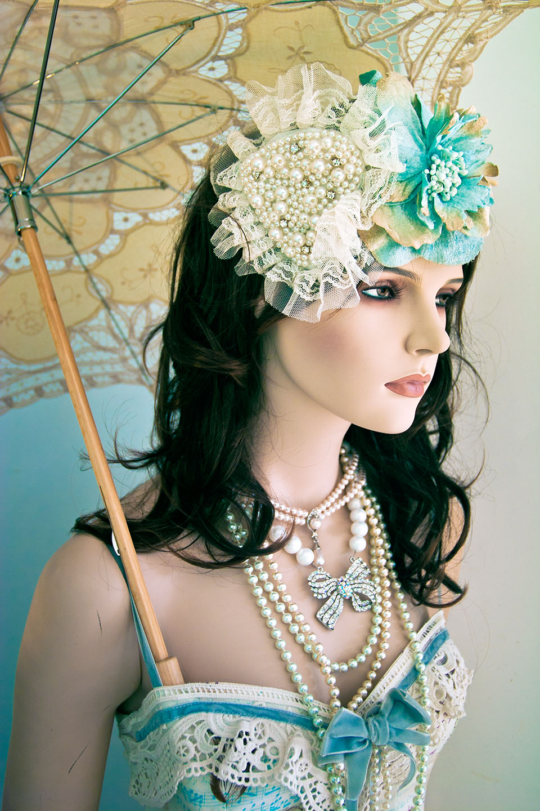
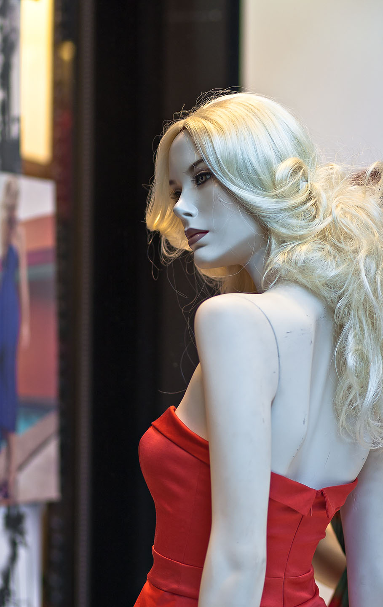
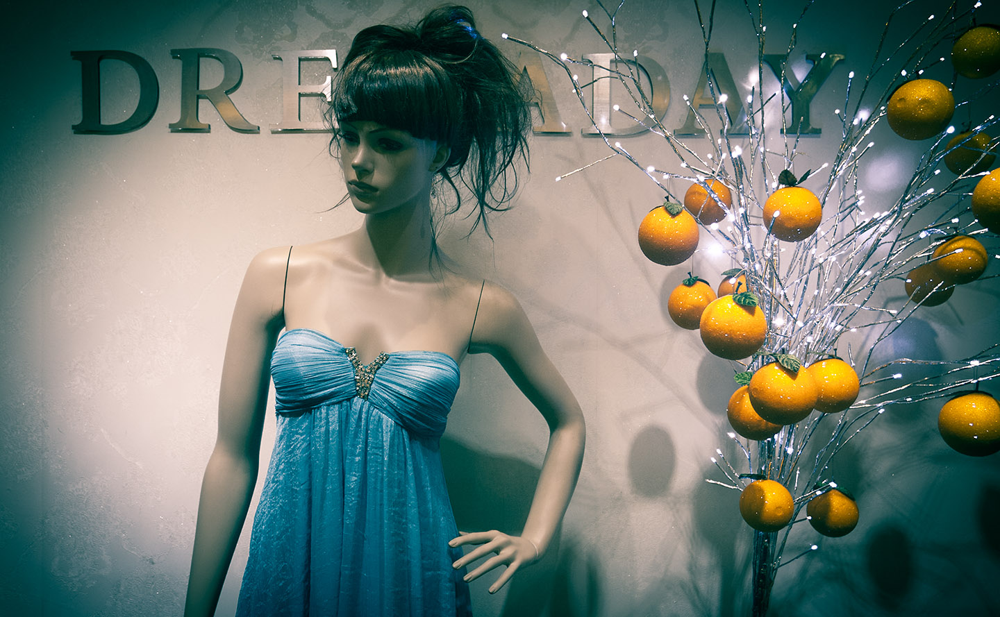
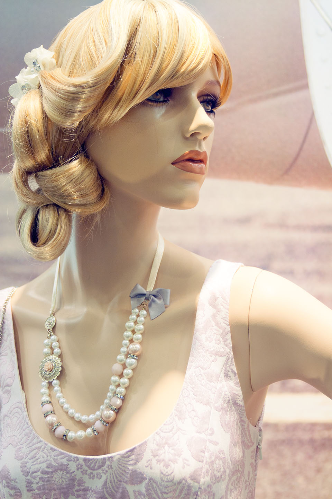
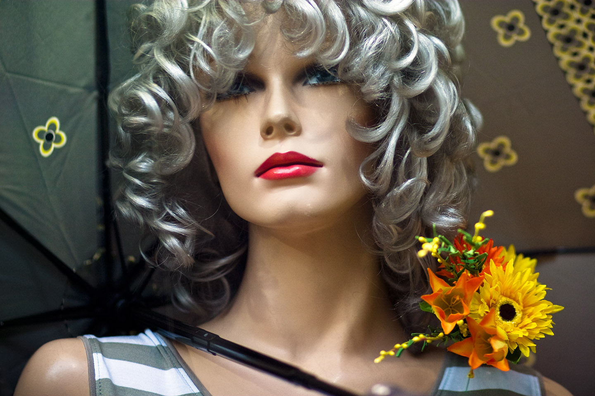

Anneke — Vienna, Austria, 2010
Fatima Flame — Sydney, Australia, 2011
The Miraculous Miss Anderson — Sydney, Australia, 2011

Bo Bride — Brisbane, Australia, 2011

Caitrin Chalk — Sydney, Australia, 2011

Dreaday — Singapore, 2012
Fanny Frost — Vienna, Austria, 2010

Priscilla Pearl — Sydney, Australia, 2011
Medusa — London, UK, 2008
Patty Plastic — Bern, Switzerland, 2007

In Grey — Budapest, Hungary, 2008
Sleeping Beauty — London, UK, 2008
Vanessa Vivid — Vienna, Austria, 2010